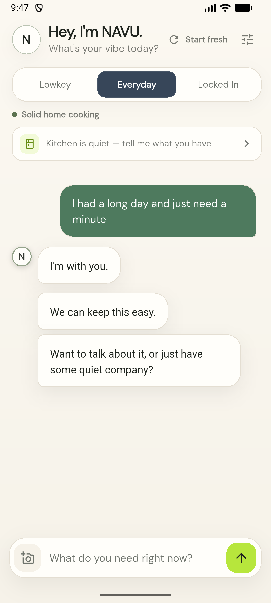
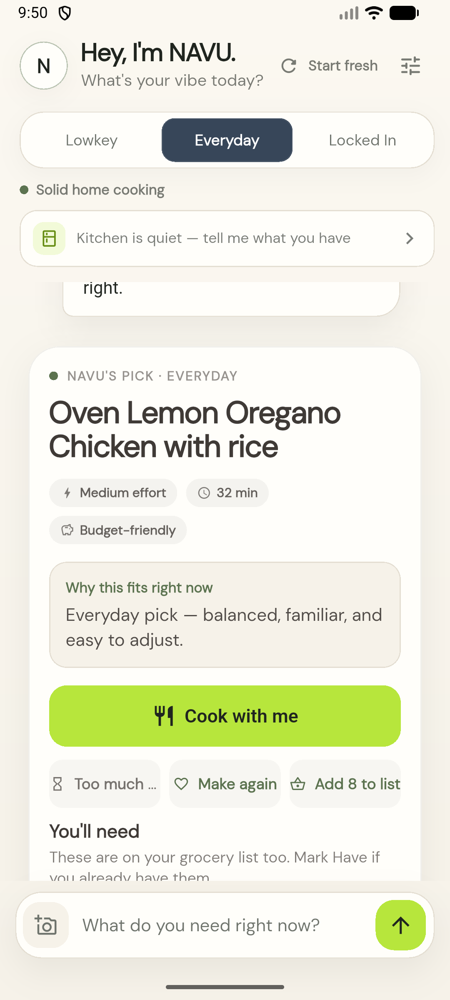
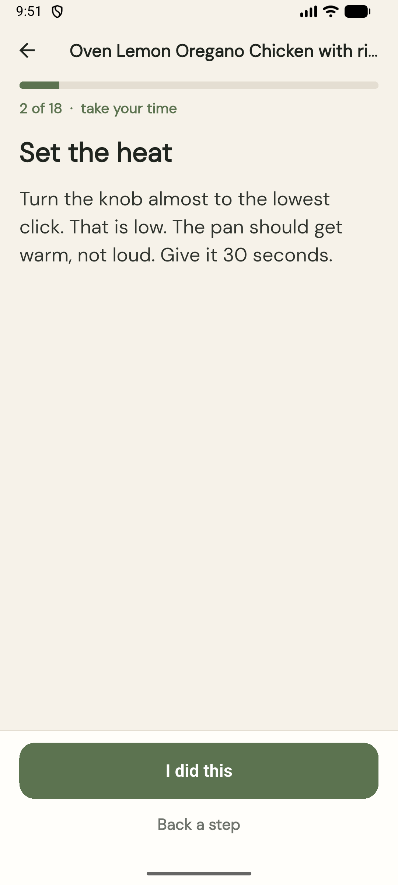

01
Talk first
Talk the way you normally talk.
No special prompt. Be brief, messy, casual, or completely yourself. NAVU follows your energy without guessing your identity.
Company first · Food second
Whatever the time of day, NAVU meets you where you are, helps you choose a meal or snack that feels doable, and stays with you through every step.

A real moment with NAVU
NAVU doesn’t rush past how you feel. It listens, makes one useful decision, then stays beside you one small step at a time.
One conversation, three modes
A normal sentence stays a normal conversation. NAVU responds to the moment without forcing food into it.
Talk first
No special prompt. Be brief, messy, casual, or completely yourself. NAVU follows your energy without guessing your identity.
One good choice
One complete meal card matched to your vibe, time, effort, and budget, with a clear reason it fits right now. Snacks work too.

Stay with me
No wall of instructions. NAVU breaks what you are making into calm, human-sized steps and lets you move at your pace.

Why it feels different
NAVU brings conversation, food knowledge, memory, and safety together in one experience. Everything works together so NAVU can listen, make sense of the moment, and help you take the next step.
NAVU can tell the difference between needing a little company, wanting a meal now, and trying to use what is already in the kitchen.
NAVU responds to how you speak in the moment. It does not need to guess your background or identity to meet you there.
Your preferences, kitchen, recent meals, and the conversation already in motion help NAVU avoid generic or repetitive answers.
When you are ready, NAVU can move from conversation to one realistic meal card, a useful grocery list, and calm step-by-step cooking help.
Your vibe changes how NAVU responds and what it recommends.
Gentle
Easy wins only. Still something satisfying when your energy is low.
Home
Solid home cooking. Balanced, familiar, easy to adjust.
Worth it
More technique and deeper flavor when you want to put in the work.
Your grocery list stays connected to what you are making. Rice in the pantry goes under Have. Anything missing stays under Need.
Real help comes first
If someone says they may be in crisis, NAVU pauses food suggestions and points them toward real-world support. In the United States and its territories, that includes calling or texting 988 for free, confidential help from a skilled crisis counselor.
NAVU does not pretend to replace professional care. If there is immediate danger, it directs the person to call 911.
Learn what to expect from 988The promise
No subscriptions, paid features, or ads in your conversation. Helpful technology should work for people, not use their needs against them. Your food preferences are yours to choose, and NAVU never makes assumptions about who you are.
NAVU can support itself through clearly labeled business activity outside the private conversation. Revenue will never unlock features, change its recommendations, or turn what you share into ad space.
Mobile app
NAVU is in active development. Verified store links will appear here when the app is ready to download.
Cook-together guidance uses familiar measurements such as cups, tablespoons, and °F.